Why daggr?
Drawing DAGs with ggdiagram and ggarrow is
powerful but requires ~30 lines of boilerplate (helper functions,
arrowhead config, theme setup). daggr wraps all of that so
you can focus on the graph itself.
Canonical DAG Structures
1. Fork (Confounder)
A common cause Z creates a spurious association between X and Y. Conditioning on Z blocks the backdoor path.
Z <- dag_ellipse("Z")
X <- dag_ellipse("X") |> place(from = Z, where = "below left", sep = 2.5)
Y <- dag_ellipse("Y") |> place(from = Z, where = "below right", sep = 2.5)
ggdiagram(font_size = 14) +
Z + X + Y +
dag_connect(Z, X) +
dag_connect(Z, Y) +
theme_dag() +
ggplot2::labs(title = "Fork (Confounder)")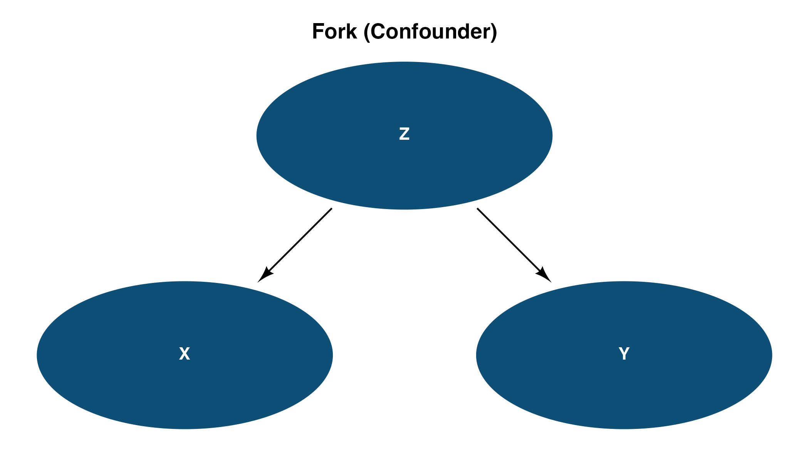
Fork (Confounder)
2. Pipe (Mediator)
The effect of X on Y is transmitted entirely through the mediator M. Conditioning on M blocks the causal path.
X <- dag_ellipse("X")
M <- dag_ellipse("M") |> place(from = X, where = "right", sep = 2.5)
Y <- dag_ellipse("Y") |> place(from = M, where = "right", sep = 2.5)
ggdiagram(font_size = 14) +
X + M + Y +
dag_connect(X, M) +
dag_connect(M, Y) +
theme_dag() +
ggplot2::labs(title = "Pipe (Mediator)")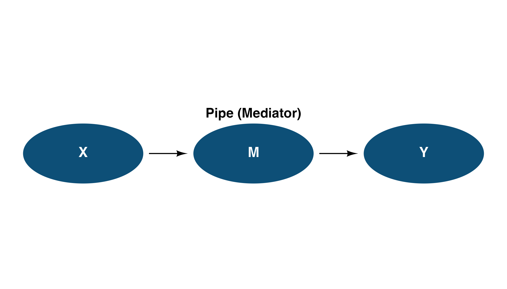
Pipe (Mediator)
3. Collider
X and Y are independent causes of C. Conditioning on the collider C opens a spurious path between X and Y.
X <- dag_ellipse("X")
Y <- dag_ellipse("Y") |> place(from = X, where = "right", sep = 5)
C <- dag_ellipse("C") |> place(from = X, where = "below right", sep = 2.5)
ggdiagram(font_size = 14) +
X + Y + C +
dag_connect(X, C) +
dag_connect(Y, C) +
theme_dag() +
ggplot2::labs(title = "Collider")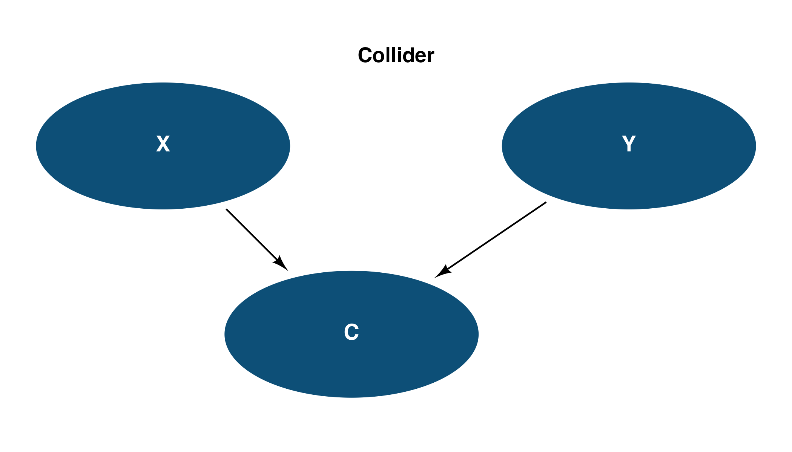
Collider
4. Instrumental Variable
Z is an instrument: it affects Y only through X. The unmeasured confounder U biases the naive X -> Y estimate, but the instrument identifies the causal effect.
Z <- dag_ellipse("Z")
X <- dag_ellipse("X") |> place(from = Z, where = "right", sep = 2.5)
Y <- dag_ellipse("Y") |> place(from = X, where = "right", sep = 2.5)
U <- dag_ellipse("U", fill = "#708090") |>
place(from = X, where = "above right", sep = 2.5)
ggdiagram(font_size = 14) +
Z + X + Y + U +
dag_connect(Z, X) +
dag_connect(X, Y) +
dag_connect(U, X) +
dag_connect(U, Y) +
theme_dag() +
ggplot2::labs(title = "Instrumental Variable")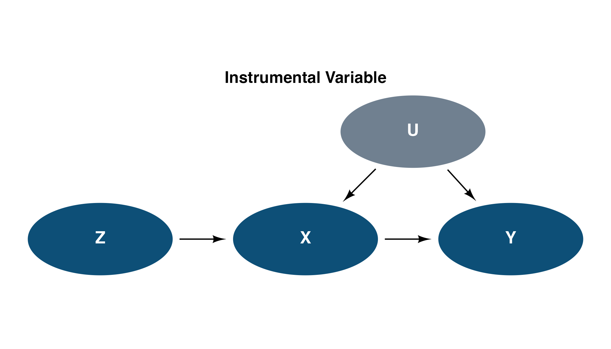
Instrumental Variable
5. Front-Door (Smoking-Tar-Cancer)
Pearl’s canonical example. Unmeasured Genetics confounds Smoking and Cancer, but the front-door path through Tar allows identification.
Genetics <- dag_ellipse("Genetics", fill = "#708090")
Smoking <- dag_ellipse("Smoking") |>
place(from = Genetics, where = "below left", sep = 2.5)
Cancer <- dag_ellipse("Cancer") |>
place(from = Genetics, where = "below right", sep = 2.5)
Tar <- dag_ellipse("Tar") |>
place(from = Smoking, where = "below right", sep = 2.5)
ggdiagram(font_size = 14) +
Genetics + Smoking + Cancer + Tar +
dag_connect(Genetics, Smoking) +
dag_connect(Genetics, Cancer) +
dag_connect(Smoking, Tar) +
dag_connect(Tar, Cancer) +
theme_dag() +
ggplot2::labs(title = "Front-Door Criterion")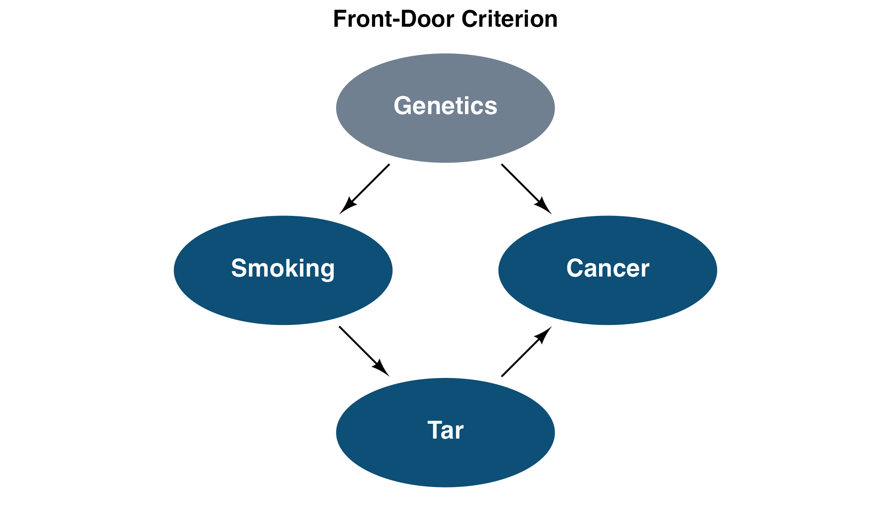
Front-Door Criterion
6. M-Bias (Butterfly)
Adjusting for the collider M increases bias. U1 and U2 are unmeasured, but conditioning on M opens a spurious path between X and Y.
X <- dag_ellipse("X")
Y <- dag_ellipse("Y") |> place(from = X, where = "right", sep = 5)
U1 <- dag_ellipse("U1", fill = "#708090") |>
place(from = X, where = "above right", sep = 2.5)
U2 <- dag_ellipse("U2", fill = "#708090") |>
place(from = Y, where = "above left", sep = 2.5)
M <- dag_ellipse("M") |>
place(from = U1, where = "below right", sep = 2.5)
ggdiagram(font_size = 14) +
X + Y + U1 + U2 + M +
dag_connect(U1, X) +
dag_connect(U1, M) +
dag_connect(U2, M) +
dag_connect(U2, Y) +
dag_connect(X, Y) +
theme_dag() +
ggplot2::labs(title = "M-Bias (Butterfly)")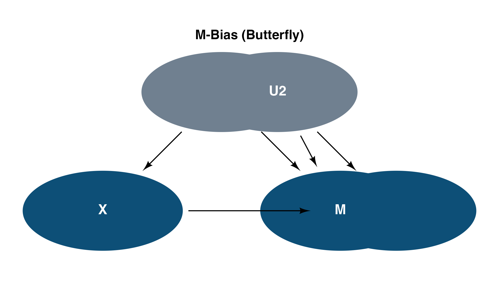
M-Bias (Butterfly)
7. Simpson’s Paradox (Berkeley Admissions)
Gender affects both Department choice and Admission directly. The marginal association reverses when conditioning on Department.
Gender <- dag_ellipse("Gender")
Department <- dag_ellipse("Department") |>
place(from = Gender, where = "right", sep = 2.5)
Admission <- dag_ellipse("Admission") |>
place(from = Department, where = "right", sep = 2.5)
ggdiagram(font_size = 14) +
Gender + Department + Admission +
dag_connect(Gender, Department) +
dag_connect(Department, Admission) +
dag_connect(Gender, Admission, arc_bend = 0.4) +
theme_dag() +
ggplot2::labs(title = "Simpson's Paradox")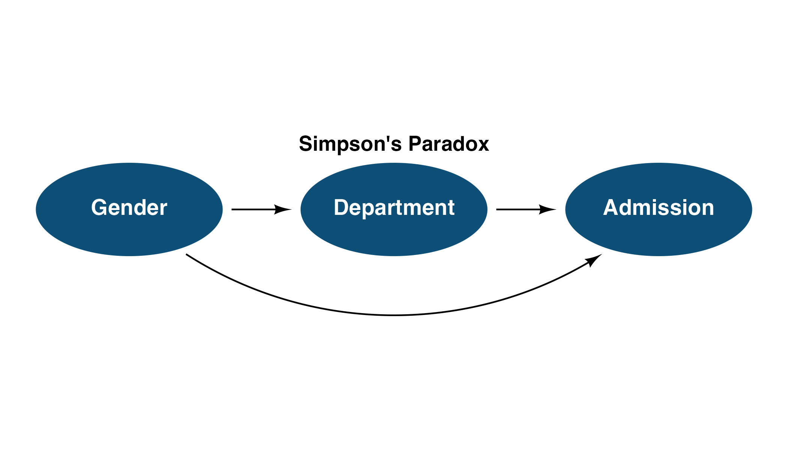
Simpson’s Paradox
Reducing Boilerplate
Semantic Colors with dag_fills
Instead of repeating hex codes like "#708090" throughout
your DAG, use the built-in dag_fills palette. It provides
autocomplete-friendly names for common variable types:
dag_fills$treatment # "#2E7D32" (green)
dag_fills$outcome # "#C62828" (red)
dag_fills$unmeasured # "#708090" (slate gray)
Z <- dag_ellipse("Z", fill = dag_fills$instrument)
X <- dag_ellipse("X", fill = dag_fills$treatment) |>
place(from = Z, where = "right", sep = 2.5)
Y <- dag_ellipse("Y", fill = dag_fills$outcome) |>
place(from = X, where = "right", sep = 2.5)
U <- dag_ellipse("U", fill = dag_fills$unmeasured) |>
place(from = X, where = "above right", sep = 2.5)
ggdiagram(font_size = 14) +
Z + X + Y + U +
dag_connect(Z, X) +
dag_connect(X, Y) +
dag_connect(U, X) +
dag_connect(U, Y) +
theme_dag() +
ggplot2::labs(title = "Instrumental Variable (with dag_fills)")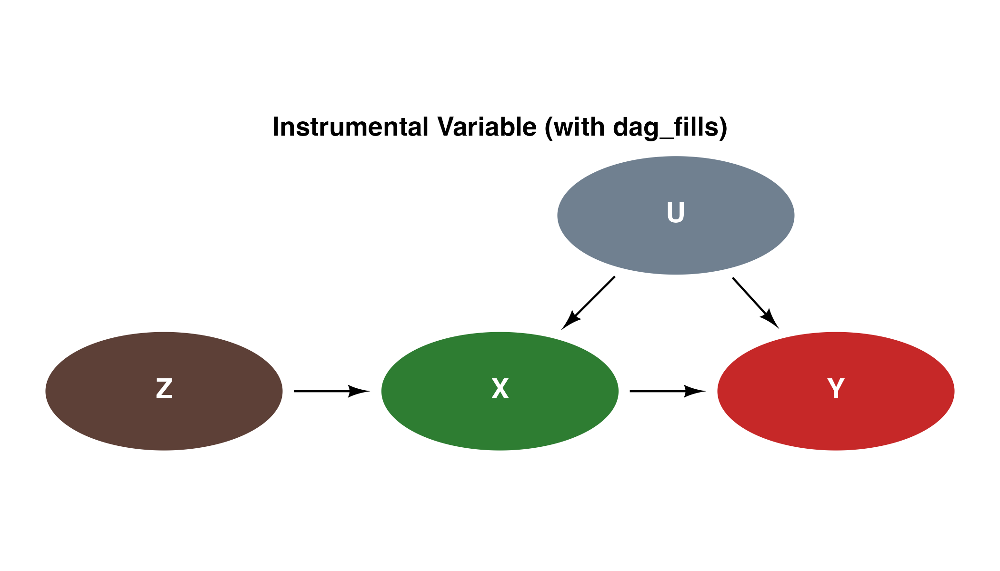
Using dag_fills
Batch Edges with dag_edges()
For DAGs with many edges, dag_edges() lets you define
all connections in one block instead of chaining separate
dag_connect() calls. Shared defaults (resect,
color) are specified once; per-edge overrides go inside
each dag_edge().
X <- dag_ellipse("Treatment", fill = dag_fills$treatment)
M <- dag_ellipse("Mediator") |> place(X, "right", sep = 4)
Y <- dag_ellipse("Outcome", fill = dag_fills$outcome) |>
place(M, "right", sep = 4)
C1 <- dag_ellipse("C1", fill = dag_fills$unmeasured) |>
place(X, "above", sep = 2.5)
C2 <- dag_ellipse("C2", fill = dag_fills$unmeasured) |>
place(M, "above", sep = 2.5)
U <- dag_ellipse("U", fill = dag_fills$latent) |>
place(Y, "above", sep = 2.5)
ggdiagram(font_size = 14) +
X + M + Y + C1 + C2 + U +
dag_edges(
dag_edge(X, M),
dag_edge(M, Y),
dag_edge(X, Y, arc_bend = 0.4),
dag_edge(C1, X),
dag_edge(C1, M, arc_bend = -0.2),
dag_edge(C2, M),
dag_edge(C2, Y),
dag_edge(U, M, linetype = "dashed"),
dag_edge(U, Y, linetype = "dashed")
) +
theme_dag()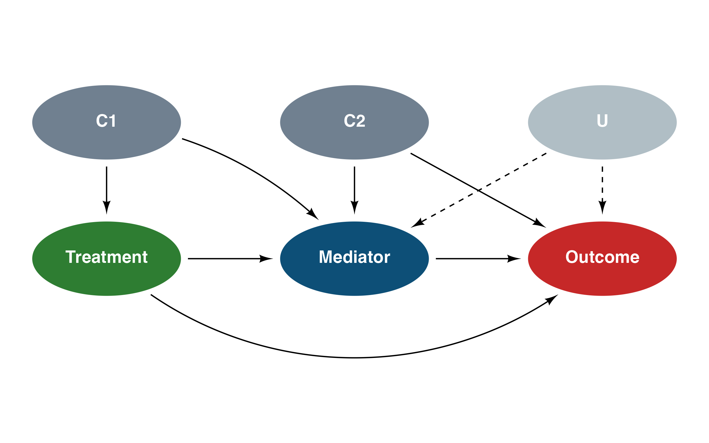
Mediation DAG with dag_edges()
Advanced Features
DGP vs Measurement
Use annotate() to label layers, and
linetype to distinguish causal relationships from observed
associations.
# DGP layer
dgp_ideo <- dag_ellipse("Idéologie")
dgp_behav <- dag_ellipse("Comportement") |>
place(dgp_ideo, "right", sep = 4)
# Measurement layer
meas_ideo <- dag_ellipse("Idéologie") |>
place(dgp_ideo, "bottom", sep = 3)
meas_behav <- dag_ellipse("Comportement") |>
place(meas_ideo, "right", sep = 4)
ggdiagram(font_size = 14) +
dgp_ideo + dgp_behav +
meas_ideo + meas_behav +
dag_connect(dgp_ideo, dgp_behav, linetype = "solid") +
dag_connect(meas_behav, meas_ideo, linetype = "dashed") +
ggplot2::annotate("text",
x = mean(c(dgp_ideo@center@x, dgp_behav@center@x)),
y = 3, label = "DGP", fontface = "bold", size = 6) +
ggplot2::annotate("text",
x = mean(c(meas_ideo@center@x, meas_behav@center@x)),
y = -3, label = "Measurement", fontface = "bold", size = 6) +
theme_dag()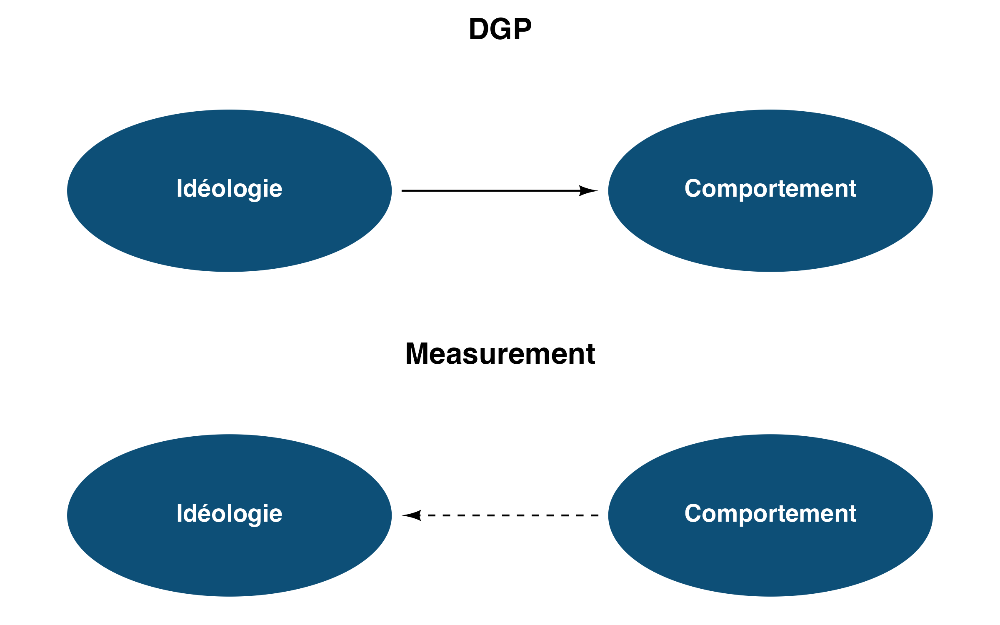
DGP vs Measurement
Mixed Node Shapes and Linetypes
Use dag_rectangle() for observed/constructed variables
and different linetype values to encode edge semantics
(e.g., definitional links vs causal effects).
A <- dag_ellipse("Intérêt politique")
B <- dag_ellipse("Autoplacement<br>Gauche-Droite") |>
place(A, "top left", sep = 3.5)
C <- dag_ellipse("A voté<br>à la dernière<br>élection") |>
place(A, "top right", sep = 3.5)
D <- dag_rectangle("Extrémisme", fill = "darkred") |>
place(B, "top", sep = 2.5)
E <- dag_rectangle("Participation<br>électorale", fill = "darkred") |>
place(C, "top", sep = 2.5)
ggdiagram() +
A + B + C + D + E +
dag_connect(D, B, linetype = 4) +
dag_connect(E, C, linetype = 4) +
dag_connect(A, B) +
dag_connect(A, C) +
dag_connect(B, C) +
dag_connect(D, E, linetype = 3) +
theme_dag()
Political Attitudes DAG
Multiline Labels
Node labels support <br> for line breaks, which is
useful for longer variable names.
X <- dag_ellipse("Years of<br>Education")
M <- dag_ellipse("Political<br>Knowledge") |>
place(X, "right", sep = 3.5)
Y <- dag_ellipse("Voter<br>Turnout") |>
place(M, "right", sep = 3.5)
ggdiagram(font_size = 14) +
X + M + Y +
dag_connect(X, M) +
dag_connect(M, Y) +
dag_connect(X, Y, arc_bend = -0.4) +
theme_dag()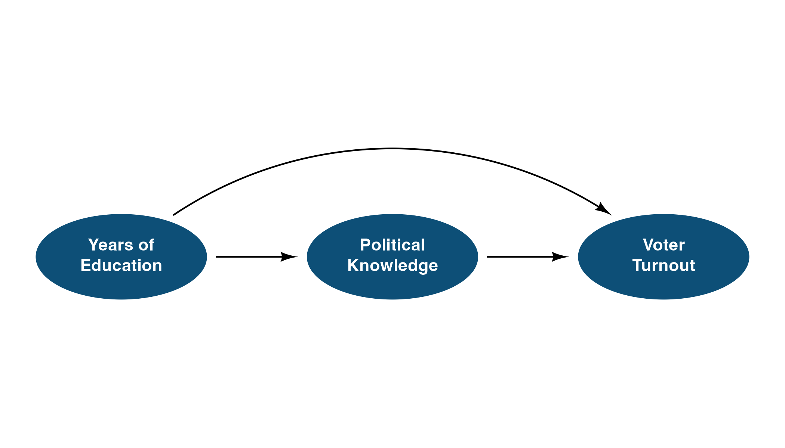
Multiline Labels
Custom Colors
Change fill to distinguish different types of variables
(e.g., treatment, outcome, unmeasured).
Treatment <- dag_ellipse("Treatment", fill = "#2E7D32")
Outcome <- dag_ellipse("Outcome", fill = "#C62828") |>
place(Treatment, "right", sep = 4)
Confounder <- dag_ellipse("Confounder", fill = "#708090") |>
place(Treatment, "above right", sep = 2.5)
Mediator <- dag_ellipse("Mediator") |>
place(Treatment, "below right", sep = 2.5)
ggdiagram(font_size = 14) +
Treatment + Outcome + Confounder + Mediator +
dag_connect(Treatment, Outcome) +
dag_connect(Treatment, Mediator) +
dag_connect(Mediator, Outcome) +
dag_connect(Confounder, Treatment) +
dag_connect(Confounder, Outcome) +
theme_dag()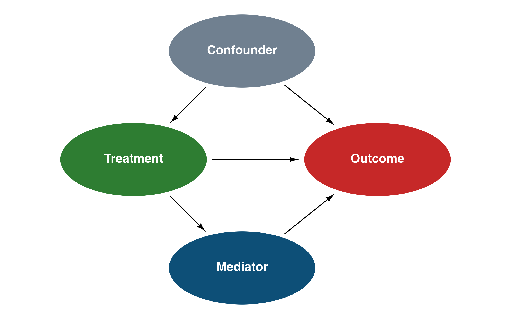
Custom Node Colors